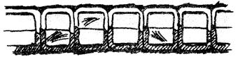
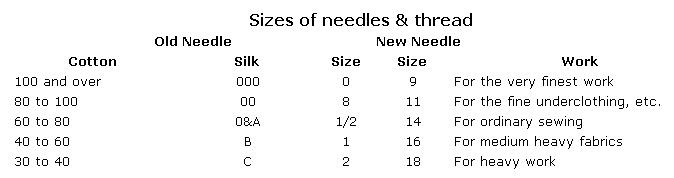
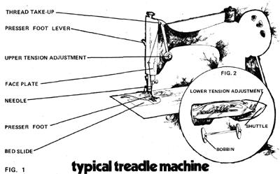

How To Care For A Treadle Sewing Machine
By the Mother Earth News editors
March/April 1975
Treadle sewing machines work as well as electric models, if not better without electricity. They're also inexpensive, $10.00 to $40.00 (I bought mine for $25.00, in good shape). With proper care they'll last almost forever. If you're lucky enough to get hold of one of these fine devices, some of the hints in this article may help you get Old Faithful to sew again and keep her sewing right.
First of all, treat your newly acquired machine to a thorough oiling. Use a good sewing machine lubricant such as the Singer brand not an all-purpose household product which will become gummy. Every point where moving parts rub together should be treated. Look for oil holes on the head, and don't forget the lower parts and the treadle mechanism. If the device runs hard or is really dirty, flush about a pint of kerosene through the oil ports with the help of an oilcan. Operate the machine for a few minutes, wipe it off completely and oil it later when the metal has dried. It's very important to lubricate regularly from this time on (once a day if you're doing a lot of sewing).
TENSION
If you have either of these problems, check your needle. It should be sharp, straight, and of the proper size for the thread you're using generally as small as will allow the strand to pass through the eye freely. If that's not the trouble, try regulating the appropriate controls. The upper tension adjustment is usually a thumbscrew on the head, and the lower adjustment is a screw on the shuttle (see Figs. 1 and 21. Turning the regulator clockwise increases the pull on the thread.
If your machine won't stitch at all, you'll probably have to reset the tensions from scratch. Thread the device as if you were preparing to sew (see Fig. 1) and be sure to lower the presser foot, because on some models the tension is released when this part is raised. Then pull the thread through the needle, adjusting the upper tension control until the resistance is firm but not tight. Thread the shuttle and insert it in the machine. Draw out the lower thread and tighten or loosen the screw until the tension feels the same as that of the top thread. After this operation the machine should sew well enough to allow fine adjustments to be made if necessary.
OTHER PROBLEMS
DRIVE BELT: Keep it moderately tight. If it's too loose, cut out a section of leather (not too much!), punch a new hole and replace the clip.
BREAKING UPPER THREAD: The following are possible causes:
[1] The machine is threaded improperly.
[2] The needle is too small for the thread.
[3] The upper tension is too tight.
[4] The eye of the needle is rough.
[5] The point of the shuttle has become blunt.
BREAKING LOWER THREAD:
[1] The lower tension is too tight.
[2] The bobbin is wound too full.
[3] The shuttle is dirty.
[4] The hole in the needle plate may be rough (polish it with a smooth pointed instrument). 1
PUCKERING:
[1] Too much tension in one or both threads.
[2] Too much pressure on the presser foot.
SKIPPED STITCHES:
[1] The needle is the wrong size, or too fine for the thread.
[2] The needle is dull or bent.
[3] The point of the shuttle has become blunt.
If your machine still fails to operate in spite of your efforts or if you have a rotary sewer or other unusual type -you might try to locate a repair book. One helpful work I found in the library is
Sincere's Sewing Machine Service Book
by William Ewers, an easily understood manual that covers both old and new models. The third edition (1971)is available for $9.95 from Sincere Press, P.O. Box 10422, Phoenix, Arizona 85064.
100 and over 000 0 9 For the very finest work 80 to 100 00 8 11 For the fine underclothing, etc. 60 to 80 0&A 1/2 14 For ordinary sewing 40 to 60 B 1 16 For medium heavy fabrics 30 to 40 C 2 18 For heavy work
|
 A machine that sews properly produces a tight seam with the stitches crossing in the center of the line: |
Stitching like the sample below shows that the shuttle thread is too tight or the upper thread too loose: |
 The opposite situation-loose shuttle thread or tight upper thread-causes a pattern like this: |
|
 |
 |
|